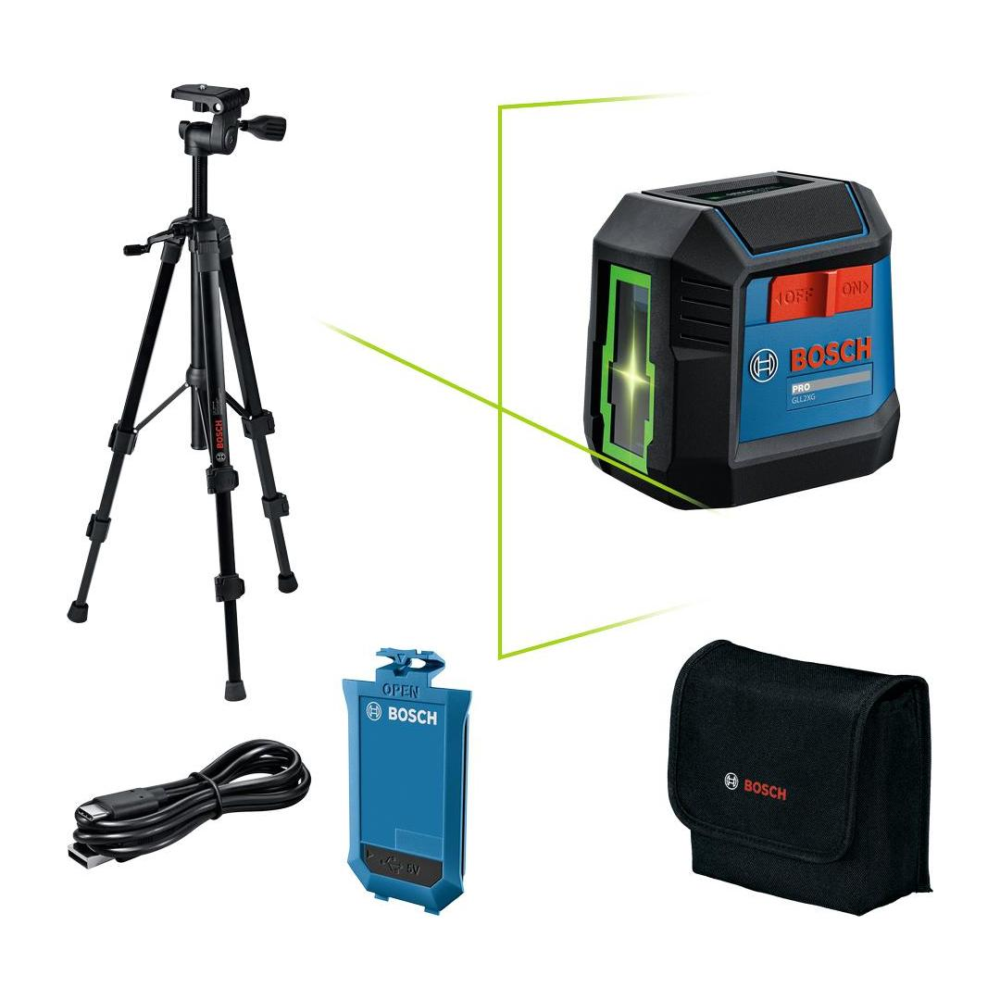
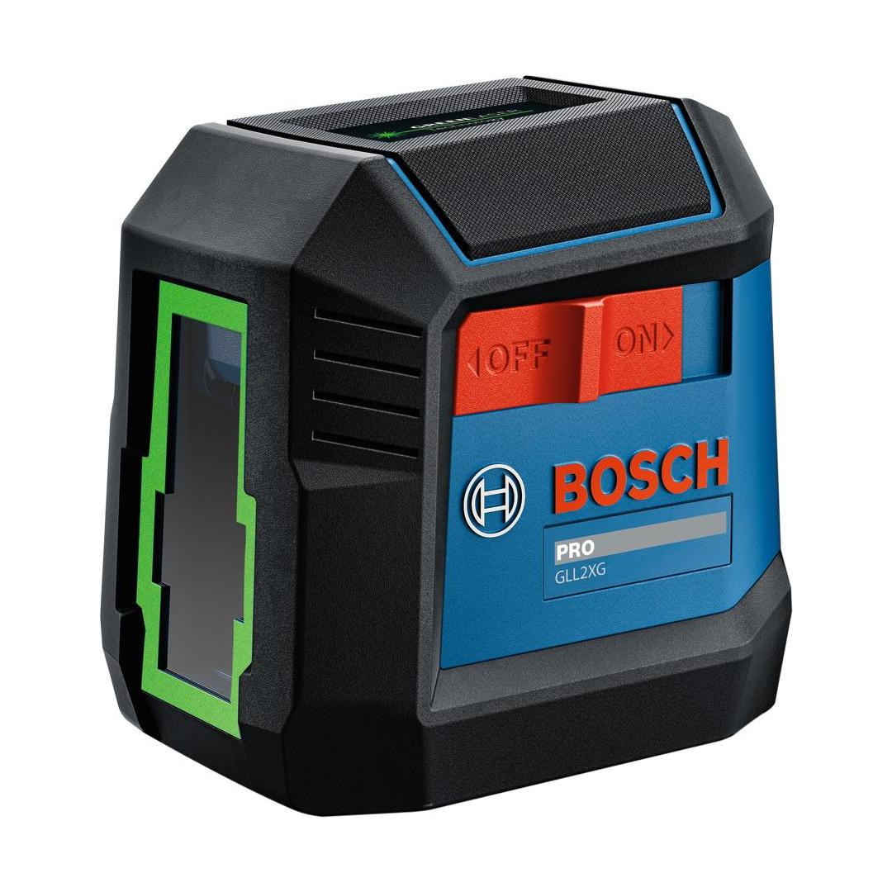
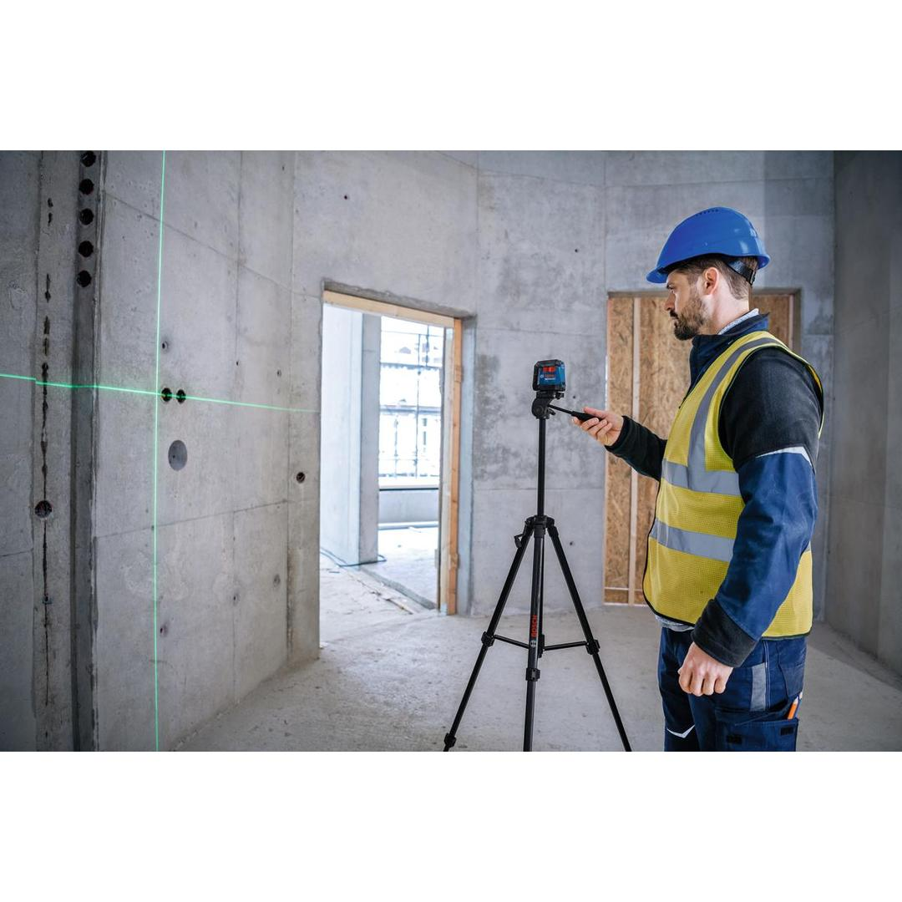
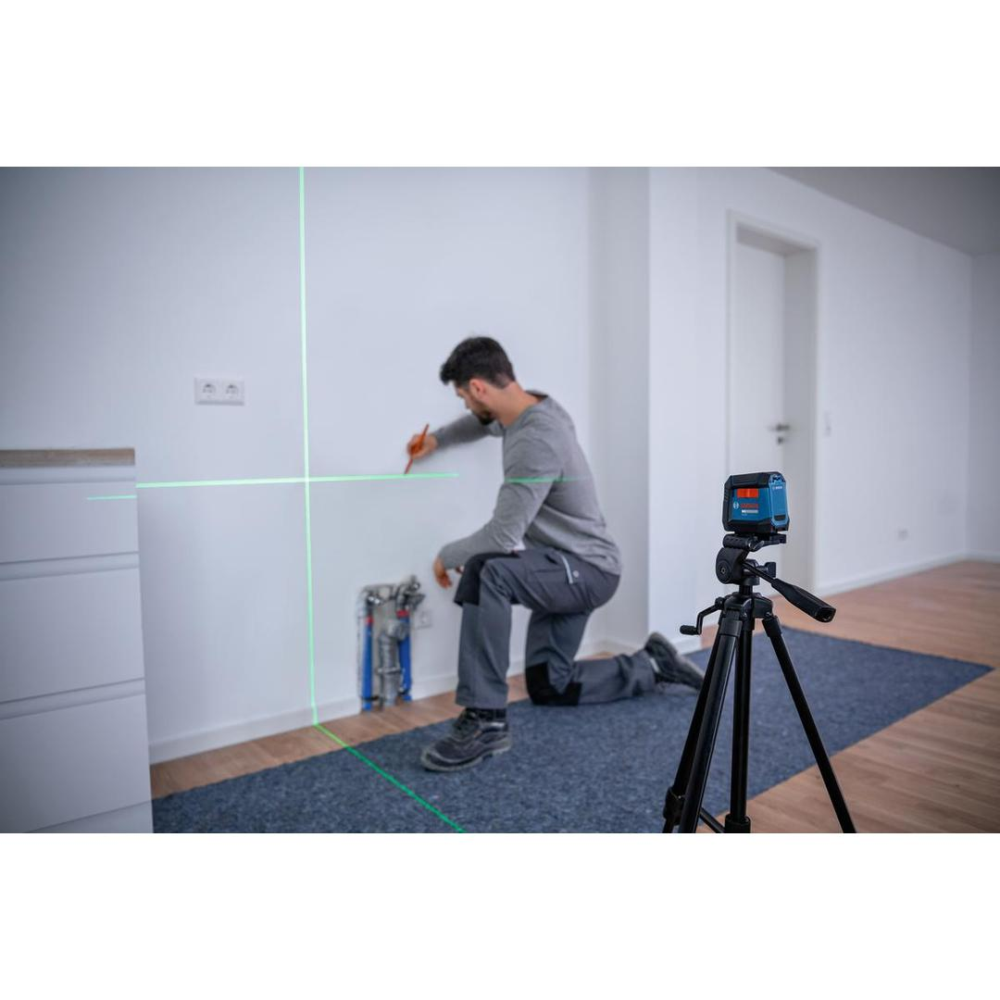
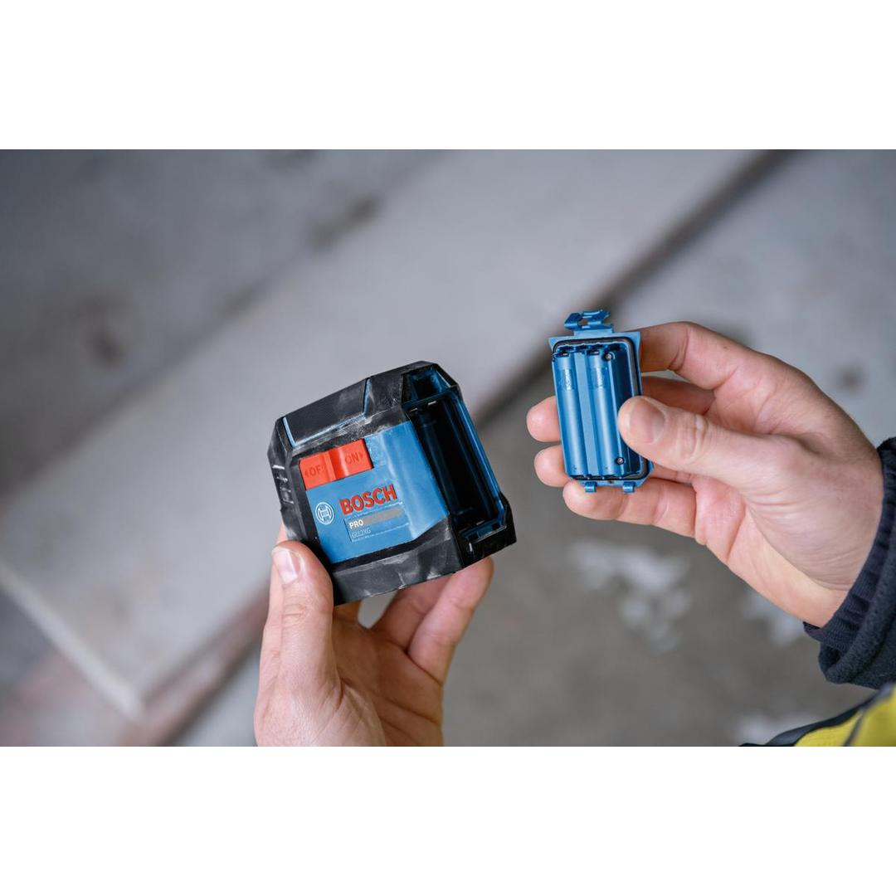

06010653G1






The GLL2XG line laser delivers maximum visibility and uninterrupted performance to save you time and effort compared to manual methods. With an extended visible range of 20 m, it’s designed to handle larger projects with ease. The tool’s green laser lines are up to 4x more visible than red lasers, while its one-switch operation simplifies use and prevents errors. The included BA 3.7V 1.0Ah A Professional rechargeable battery pack, eliminates the need for alkaline batteries and allows you to work continuously - even while charging. The GLL2XG features a pendulum lock when the tool is turned off, protecting it from damage during transportation.
| Laser diode |
500 – 540 nm, < 5 mW |
| Operating temperature |
-10 – 40 °C |
| Storage temperature |
-20 – 70 °C |
| Laser class |
2 |
| Working range, value |
20 m |
| Working range without receiver |
20 m |
| Accuracy |
± 0.6 mm/m |
| Self-levelling range |
± 3.5° |
| Levelling time |
6 s |
| Dust and splash protection |
IP55 |
| Power supply |
3.7 V Li-Ion battery (1000 mAh) |
| Operating time (max.) |
8 h |
| Tripod thread |
1/4" |
| Weight, approx. |
0.3 kg |
| Colour of laser line |
Green |
| Projection |
2 lines |
| Battery voltage |
3.7 V Li-Ion battery (1000 mAh) |
Rechargeable line laser with green beams for maximum visibility
Designed for versatility, the GLL2XG features a ¼” tripod thread compatible with a variety of accessories to handle a wide range of tasks, covering nearly all types of interior applications. Whether you’re laying tiles, mounting furniture or installing cabinets, shelves, windows or flooring, this laser saves you time, effort and ensures accurate results – every time.